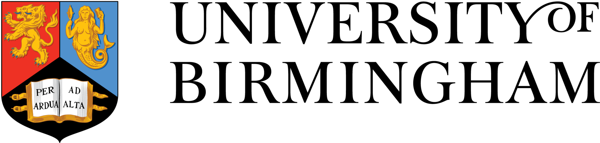

|
|

Main |
Research |
Publications |
Teaching |
Students
Funding opportunities
Disclaimer - some of the information below (especially regarding eligibility) may not be precise or up-to-date, so please check carefully.
Postdoctoral schemes
- MCSA postdoctoral fellowship
- Maximum of 8 years research experience from award of PhD
- Not resident in UK for more than 1 of the past 3 years
- University can only support a small number of applications each year
- Leverhulme early career fellowships
- Maximum of 4 years research experience from award of PhD and
- Must hold a degre (any) from a UK institution or be currently working in the UK
- University can only support a small number of applications each year
- Walter Benjamin Programme
- Must have worked continuously in Germany for at least 3 years at time of application or completed the majority of your education in Germany and spent at most 3 years researching abroad
- Humboldt Feodor Lynen Research Fellowship
- Not resident in UK for more than 6 of the past 18 months
- Must be a German national working in Germany with some exceptions - notably:
- German nationals living abroad for less than 5 years
- Non-German nationals having worked in Germany for at least 5 years
- Erwin Schroedinger Scheme
- Must have been resident in Austria for at least 3 of the last 10 years, or been working in Austria for at least 2 years
- Postdoc.mobility Scheme
- Must have Swiss citizenship, or a PhD from a Swiss insitution and have not already had a postdoctoral position abroad
- Scheme is being replaced after 2027, will update
PhD schemes
|